Douze photos passées à la même moulinette : bichromie sur une seule encre, puis un aplat — triangle, cercle ou rectangle — posé au hasard en fusion multiply. Aucun cadrage n'a été retouché à la main : tout vient du tirage d'une graine.
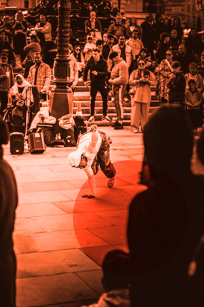
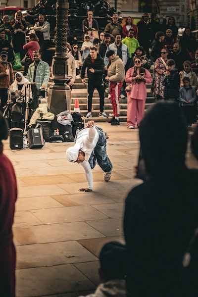
originalUn performeur de rue sur un skateboard devant la foule
photo Flaviu Costin · seed 2017
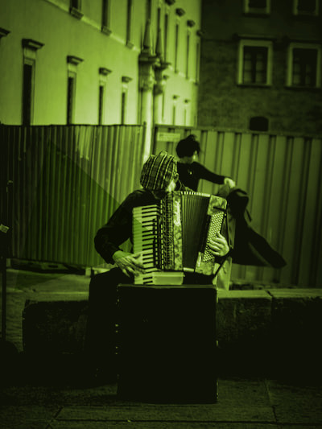
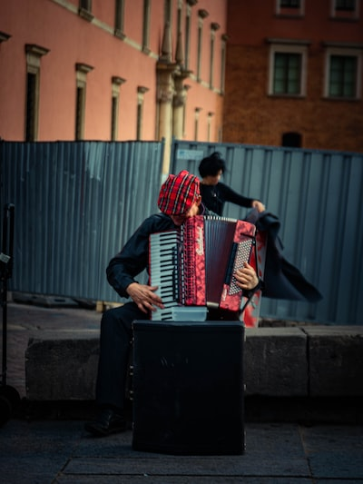
originalUne personne assise sur un banc, grande écharpe rouge et blanche
photo XAVIER PHOTOGRAPHY · seed 2018
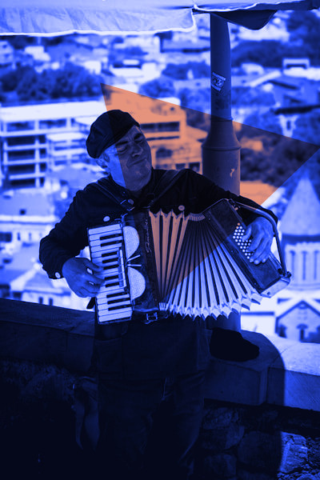
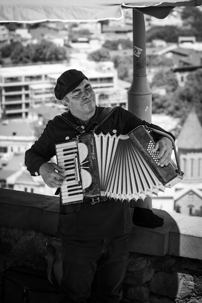
originalUn homme tenant un accordéon devant la ville
photo Sameer Srivastava · seed 2019
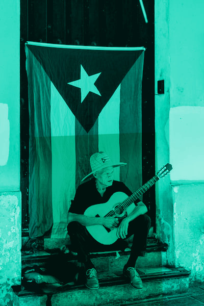
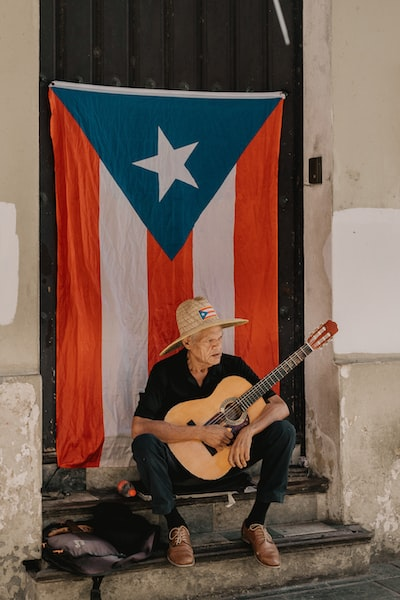
originalUn homme à la guitare assis devant un drapeau suspendu
photo Christian Crocker · seed 2020
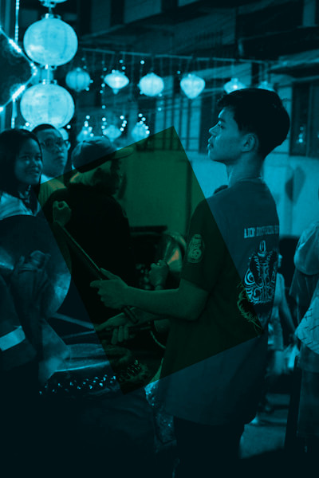
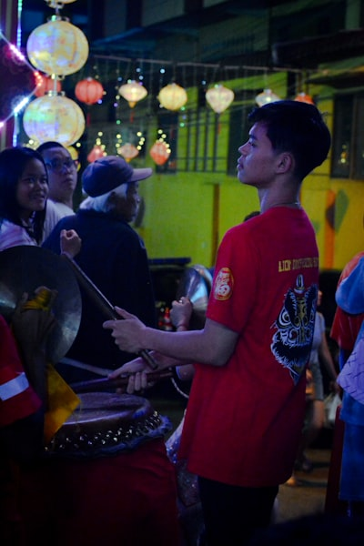
originalUn jeune batteur entouré de passants
photo Rogerio Lau · seed 2021
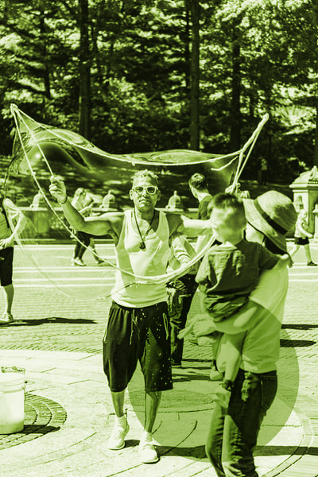
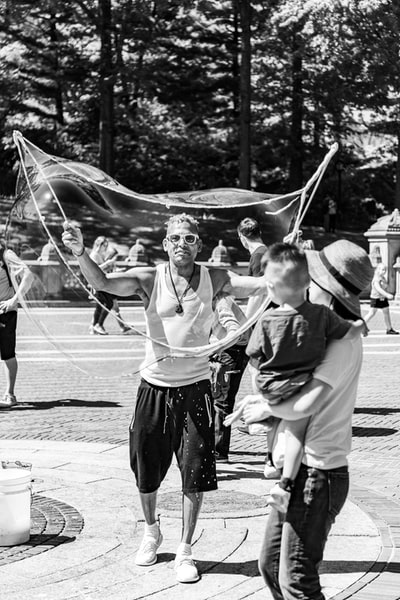
originalPhotographe de rue à Central Park, New York
photo Dustin Bowdige · seed 2022
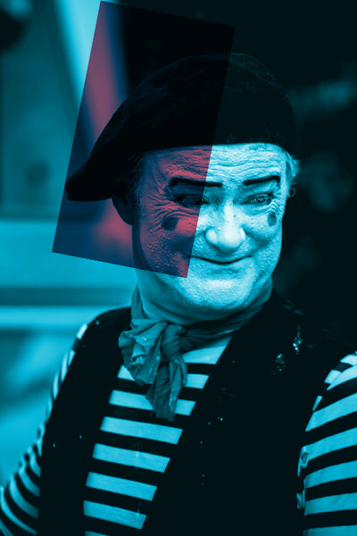
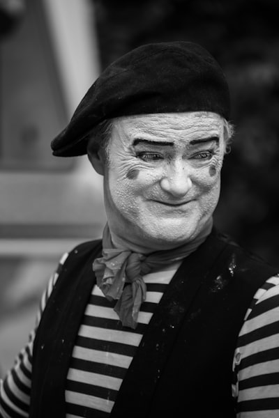
originalUn mime souriant, béret et marinière
photo atelierbyvineeth · seed 2023
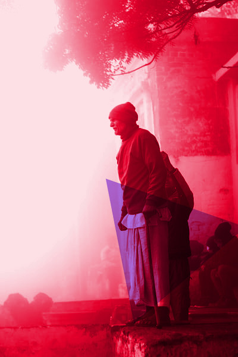
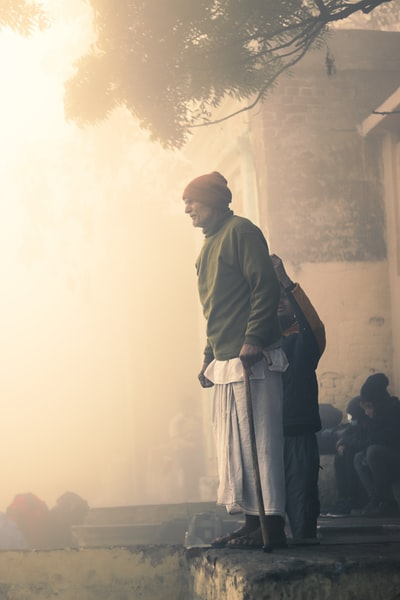
originalUn homme debout sur une marche de pierre, Yamuna ghat
photo Ankit Sharma · seed 2024
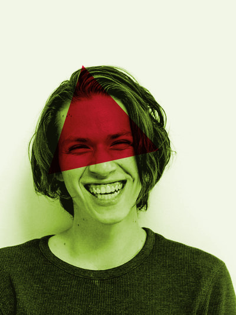
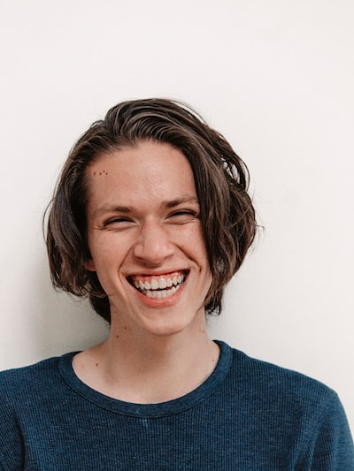
originalUne personne qui rit, chemise bleue texturée
photo nrd · seed 2025
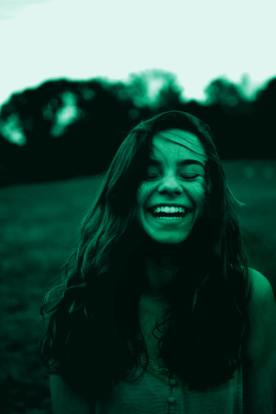
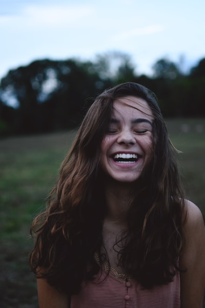
originalPortrait souriant sur fond sombre
photo Christian Bowen · seed 2026
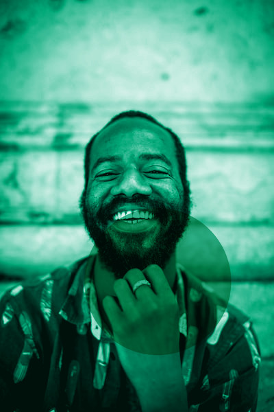
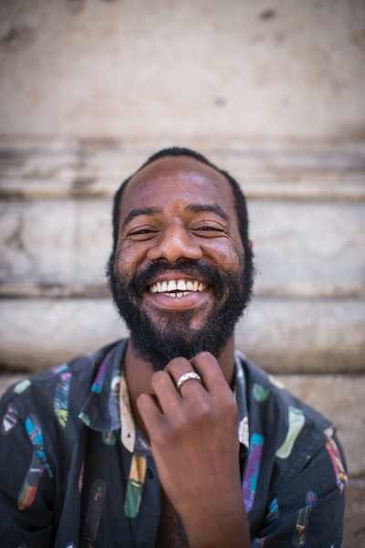
originalVisage complice sur un marché de Lisbonne
photo ben o'bro · seed 2027
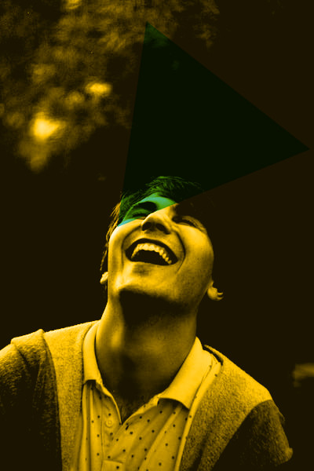
originalUn homme en pull gris, éclat de rire
photo HLS 44 · seed 2028